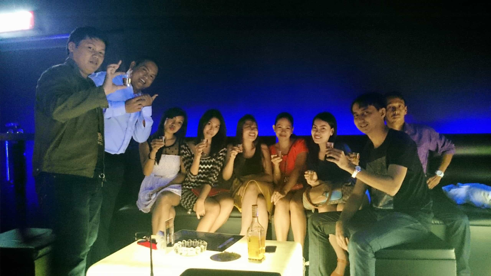

< < < Back
Two Prime Spots To Meet Girls In Cebu (Philippines) – Return Of Kings
The Philippines is often mentioned as one of the most optimal destinations for love tourism and rightly so. The obesity rates are low (although slowly increasing due to easy access to cheap crap food) and the culture can be described as a representation of moderate modernity, meaning that some traditional and conservative elements play a key role (such as heteronormativity and femininity), while modern manifestations such as nightclubs, pop music and hookup culture also are visible.
The downsides are for example bad infrastructure, pros and semi-pros disguised as normal girls (if that is not your thing), and pretty bad food in relationship to price levels.
Filipina girls and the Philippines as a travel destination have been discussed numerous times on ROK and Roosh V forum, hence I will go directly to more practical details regarding meeting girls in one of the most optimal places besides Manila, namely Cebu.
Ayala Center Shopping Mall

Cebu is an island in the region the Central Visayas, and Cebu City together with the more middle class-oriented Mandaue City, form the urban centre with almost 3 million inhabitants.
Typically a person goes there to experience nature, such as the whale sharks in Oslob, but one can also spend some time in Cebu City and Mandaue City. Cebu City is poor and pretty depressing, much like the country in general, but just in the middle there is a spacious shopping mall called Ayala Center Shopping Mall.
This is a quite optimal spot for day game. Of course there will be lot of girls who are only there for shopping, and pros that approach or smile at you due to their very ends, but a person with some degree of sound cynicism and life experience can often distinguish these categories from another. Observe, make a quick judgment, and approach.
Ayala can also be combined with online game, and every wise traveler will do some prepartory efforts upon arrival, such as HelloTalk, FilipinoCupid or Pina Love. A couple of chats can lead to a date in Ayala, or perhaps you meet the cute girl that you chatted with in the very same place a couple of days after. Since Cebu is much smaller than Metro Manila, the number and share of normal 7s, 8s and 9s are obviously more limited but some sort of online game could still be fruitful, I think. The Philippines might be poor but almost every girl between 18-30 still owns a smartphone.

Liv Super Club
Depending on the extent of the stay in Cebu, a person can have zero up to dozens of friends, girls and acquaintances in his social network. Regardless of you only go for a couple of short flings or intend to stay longer – preferably renting a place in Mandaue City – you should definitely try night game.
There is basically one major nightclub in the Cebu metropolitan area, Liv Super Club in Mandaue City, and a few less good bars and clubs in Cebu City where you can head after closing, such as Mango Square. Thus head to Liv Super Club on the weekend.

The clientele is partly Chinese, who are quite numerous in Mandaue City. They behave well yet stick mainly to themselves, while Filipina girls are more open. One can meet the whole spectrum from relatively well-educated to poor girls (although not necessarily pros or semi-pros). With the same level of game as in Western countries a good man can likely meet better looking and more decent girls than at home.
My strategy in East Asia and Southeast Asia is linked to what Roosh calls world game (mentioned in my post about Taiwan), combining alpha looks and confidence with good education, money and sometimes gentle manners. Girls will hopefully see you as a catch and by means of a cynical, realist mindset you will not have to use your wallet to get their legs spread.
Basically have fun, approach, and meet new people. First time I went there all by myself, bought some alcoholic beverages in 7-Eleven, approached some attractive girls who bought me drinks just after entering the club, started chatting with a young cute girl, ignored some pros, met some guys who I hung out with, flirted with multiple girls, and then brought the catch to my 4-star hotel in Cebu City. She was wild and we had a good time.
In summary
Using a combination of online game, day game and night game, in conjunction with a tight world game approach, a Westerner can be successful. Thus I recommend a stay in Cebu, and if you figure out logistics you could definitely stay longer and experience much more. It is not a paradise but as far as my vast experience indicates still one of the best places for love tourism.
Read More: 7 Things You Need To Know About Filipina Girls